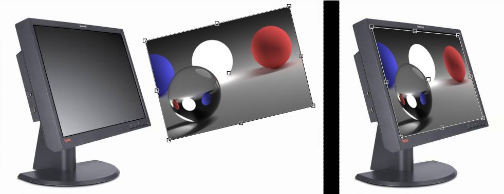
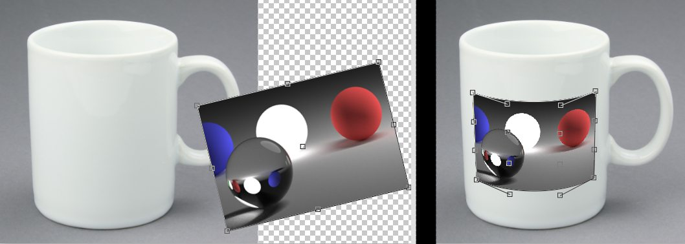
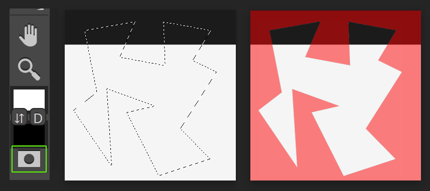

Introduction
Photopea is an advanced image editor, whic can work with both faster and vector graphics. You can use it for simple tasks, such as resizing images, as well as complex tasks, such as designingg webpages, creating illustrations, processing photographs and more.
The website will teach you how to use Photopea step by step We will start with basic tasks and gradually progress to more complex features. The chapters(on the left) have been organized, such that each chapter uses only the knowledge from the previous chapters, so you can learn effectively and efficiently.
Colors
Photopea can work with many different colors spaces (defined e.g by the ICC profile inside youe file), and the 8-bit color depth.
Starting and using Photopea
Photopea editor works in a web browser. it can be stated by going to www.photopea.com.Photopea can run on any device(desktop, laptops, tablet, phone or any other computer), but for the best comfort, we recommend having a big screen, a precise pointing device(a mouse or a stylus) and a keyboard.
Photopea runs completely in your device, just like Sketch or Photoshop do it. It does not upload any of your files to the internet. You can load Photopea.com, disconnect from the internet and keep using it completely offline. None of your files ever leaves your computer.
Do you need any help? Ask us at our Reddit!
Workspace

The workspace of Photopea is very similar to other image editors. It consists of the Toolbar on the left, the Sidebar on the right, the Working area in the middle and the Top menu at the top.
Toolbar
The toolbar contains all available tools. Youcan switch tools by clicking on their icons in the toolbar. Only one tool can be active at a time.
Icons with a little arrow in the corner (e.g Lasso tools) contain the whole group of related tools. Click and hold a tool button to see the menu with more tools in that group.

Keep your mouse a tool icon for a moment to see the name of that tool. Some tools have capital letters attached to them (e.g B for Brush tooth). You can also switch tools by pressing corresponding keys on your keyboard.
There is the foreground and the background color at the bottom of the toolbar. It is a simple palette of two colors, which are used by some tools. You can swap them with the X button, or rest to default values (black and white) with a D.
Sidebar
The sidebar consists of two vertical columns. Each column can be folded and unfolded by clicking the thick line at the top of the column.

These columns contains panels (Layers, History, Paragraphs ...), that you may need during your work. When the column is unfolded, you can see multiple panels, that are inside. When the column is folded, you can sow and hide a specific panel by clicking the corresponding button in the column.
If you don't know where a specific panel is located, of that panel.
Main Area
Photopea allows you to open multiple documents(e.g JPG images) at the same time. The lists of opened documents is shown in the bar at the top of the main area.

Here you can switch between documents and choose the one that you want to work with. You can also close documents by pressing the cross next to the document name. Below that bar, in the middle of your document. It is the active area, where you can draw, move objects etc.
Top Menu
The top menu consists of two parts the first part(File, Edit, Image...) is the main menu of photopea. It is always the same.
The second part (below the main menu) contains parameters of the current tool. It has a different content for each tool. For example, for the Brush tool, it contains opacity of the brush, while for the Type tool, it contains the size of characters.
Do you need help? Ask us at our reddit!
Opening and Saving files
Digital graphics is stored as a raster image, or a vector image. There are many formats for saving and disturbing various types of graphics. Let's mention PNG and JPG, which contain a single-layer rectangular raster image (a grid of pixels).
Image editors use their own file formats, that contains raster and vector graphics, and additional informations, which can be useful for example, when we add a text into an image and save it as a PNG, letters would become pixels and such text would be hard to change (we would have to guess the font name, character size, the original image behind the letters would be lost)
Photopea uses the PDS format as the main format for storing image documents with an additional information. It was designed for the use in Adobe Photoshop and became very popular since then. All files, that you open in Photopea (such as PNG, JPG, Sketch) are converted to PSDs (when they are not PSDs already) When you finish editing, the result can be saved from the PSD to other formats.
Photopea also supports many kinds of resources, that can be used for editing the image. You can load your own brushes, gradients, fonts and more, the same way you open images.
Opening Files
There are several ways of opening files. The standard way is through the Open dialog(File-Open). You can also paste images (from the system clipboard) simply by pressing Ctrl+V. Another way is to open files by dragging them from your local system and dropping them into the photopea environment inside a weeb browser.
When you have no documents opened, dropped files will be opened in a regular way. When some documents are already open in Photopea, you can drop new document into the main area of the current document. The new file will be inserted into the current document as a new layer(a Smart Object layer).
When some documents are opened, you can drop new files into the top bar of the main area(which contains the list of opened documents.). Then, new files will be opened separately.

There is an experimental feature, which allows you take picture using the camera of your device right inside Photopea. Press File-Take a picture to take a picture.
You can also open files from a storage
Saving Files
You can save your work as a PSD file (to preserve the whole structure of the document) using File-Export As-PNG,JPGetc.
The save for Web window lets you choose the output format. You can also enter the resolution format of the output image. Now you can already use Photopea to resize images(File-Open, File-Export As-JPG, enter the new size and save)
When a document was opened from your device, the File-Save can be used (in modern browsers) to replace the old version of a file. Also, if you opened your file from Google Drive, or as a Smart Object, or from a server(using the API), File-Save will save your file to a correct destination.
Do you need help? Ask us at our reddit
Navigation
We already know how to open and save files in Photopea. The next step is viewing the image and its parts comfortably and moving between different areas of the image.

Zoom Tool
The Zomm tool allows you to zoom in and zoom out at different places of the image. Just select the tool (in the toolbar on the left) and click on the images. You can switch between zooming in and zooming out in the top panel, or by pressing the Alt key on the keyboard. You can also click and drag to the right to zoom in or drag to the left to zoom out.
There is a quick mode for the zoom tool. By pressing Ctrl + Spacebar, you will switch to the Zoom tool, which you can use in a reguarl way. E.g you can add or release Alt to switch between zooming in and zooming out. After releasing the keybord keys, you will return back to the previous tool. It is one of the fastest ways to zoom.
Hand Tool
The hand tool allows you to move the view to different parts of the image. Choose the Hand tool in the toolbar, then click and drag on the image to navigate to other places.
There is a quick mode for the Hand tool. Press the Spacebar to switch temporarilly to the Hand tool. Then release the Spacebar to go back to the previous tool.
Rotate View Tool
This tool allows you to rotate the view of a document. You can find it right under the Hand tool. Click and drag the document to rotate it around the center of the screen. Click Reset at the top to go back to 0`
Zooming and scrolling is also possible with a mouse wheel. Turn the mouse wheel to scroll vertically or add Ctrl to scroll horizontaly. Hold the Alt Key to zoom with the mouse wheel instead of scrolling.
Rulers
You can enable Rulers in Photopea (View-Rulers, or Ctrl + P), which will help you navigate inside the document and to estimate the size of objects.
History of Actions
Your work in Photopea is represented as a sequence of actions, that are applied to a document. Each action performs some charges to the document, and creates a new state of the document. This list of actions is shown in the History panel.New actions will appear at the bottom of the list.
Photopea allows you to withdraw your editing and return to previous states. Clicking the name of an action in the History panel will get you back to the previous state. Also, you can move forward in the history by clicking last actions(at the bottom of the list).
Another way to return to previous or future states is by choosing Edit-Step Forward (Shift + Ctrl + Z) or Edit-Step Backward(Alt + Ctrl + Z). You can also use Edit-Undo/Redo (Ctrl + Z ) to switch between last two states (it does not allow you to go "deeper" in the history)
Do you need help? Ask us at our Reddit!
Image Size
All(PSD) documet, even those with vector only graphics, have a specific document size (the resolution in pixels). Higher resolution will give you a better precision, but it also make image files larger. You can change document resolution in several ways.
Scaling the Image
Photopea allows you to make the resolution lower or larger and scale the content of the document according to the new resolution. You can do this by choosingImage-Image Size and entering a new size. You can also enter a new DPI value there.

You can also rotate the image using image-Transform-Rotate etc.
Cropping the Image
Another way of changing the resolution is by cropping the image. It will preserve the resolution and the quality of the content, but it will change the "Windows", through which you can see the content or its parts. The basic way to do it is through Image-Canva Size.
Crop Tool
The crop tool allows you to define the "viewing window" manually. Choose the crop tool and draw a rectangle over the document. You can drag the rectangle to move it accros the document, or drag the corner to change its size. You can also rotate the rectangle by dragging it near the edge, which allows you cropping the image using a different angle.
Once your cropping rectangle is ready, you can confirm or cancel the cropping in the top menu.

Do you need help? Ask us at Our Reddit!
Layers
Each PSD document consist of layers. The layers represents some parts of the image. It is usually an area filled with transperent, partially transperent or opaque pixels.
Layers are rendered one on top of another, to create the final image. You usually edit just one layer at a time. Changing(moving, rotating, drawing into) one layer has no effect on another layers.

Layer Panel
Layer panelis the main place for working with the layer structure of the document. You can find it in the sidebar on the right. It contains the list of all layers and thumbnails. Layers at the bottom of the list are the layers "in the back", while layers at the top layer are layers "in the front"
When we have many layers, we need to choose one, which we want to work with. A layer can be selected simply by clicking on it (on its name or on its thumbnail) in the layer panel.
Sometimes we need to select multiple layers at the same time. E.g if we want to rotate all of them by the same angle, or delete them all at once. When one or more layers are selected, hold Ctrl key and click on other layers, to add them to the selection, or click on already selected layers (while still holding Ctrl) to unselect them.
Folders of Layer
When we have hundred or even thousand of layers in our document, working with them in the Layer panel can be very hard. We would need to scroll the list for a long time to find a specific layer. But there is a solution.
Photopea(as well as many other image editors) allows you to create folders of layers. You can put related folders inside one layer. Folder can contain other folders. The folder can be folded and unfolded, just like the folder in your computer.

When you selct a folder (e.g. by clicking on it), all its content is also selected (even though it is not highlighted in the panel). By moving/rotating/deleting, one folder, you also move/rotate/delete all the content of the folder.
Basic Layer Properties
There are several basic properties of the layer, that you can change in the Layers panel. The main property is the visibility, which you can switch by clicking the eye icon of a layer( or a folder). When some layer is selected, you can edit the blend mode and the opacity of that layer at the top of the Layer panel.

Each layer can be locked in several ways:
- Transparency-transparecy is locked (you can paint only into non-empty areas)
- Pixels-pixel data is locked (you can not paint into the layer)
- Position-position is locked (you can not move the layer, rotate it etc.)
- All-all previous locked at once
Each layer has the name, which can help you understand the structure of large documents. Double-click the name of the layer, then you can enter a new name. After you type a new name, press Enter to confirm it, or Escape to return to the previous name.
Changing the structure
You can drag and drop layers inside the Layer panel. This way, you can reorder layers (e.g put the layers from the back to the front), place layers into folders ( or take them out of the folders), put a folder into another folder etc. By selecting multiple layers (folder), you can drag all of them at the same time.
You can find several basics buttons at the bottom of the Layers panel

The garbage binbutton let you delet all selected layers. The New Layerbuttonwill add a new empty layer on top of the current layer (the one that is selected). The New Folderbutton will add a new empty folder on top of the current layer. The last button creates the raster mask on the current layer. Similar options are also availabe by clicking the Layerbutton in the menu at the top, or by right-clicking a specific layer in the Layer panel.
Another useful operation is duplicatingthe layer (right-click-Duplicate, or Ctrl + J). You can also duplicate layers between different documents (right-click -Duplicate into). Another convinient way to duplicate layers is to drag them to "another panel" with a Move Tool. Choose a Move tool, click on the layer (in the workspace), drag it over the label of another document and wait until documents are switched. Now you can move the layer inside this second document and release the mouse.

Mergingmultiple layers into a single layer is also useful(right-click-Merge down or Merge layer)
Smart Objects
Designers often need to place several copies of the same object into the document (e.g. when you want to add multiple snowflakes on the sky). It can be done by creating the first object and then duplicating it (and moving copies to the right place).
There is a disadvantage in such approach. When you need to modify the object, you will need to modify each copy of the object separately.
Single Source
PSD format offers a better solution for dealing with many copies of the same object. The single source of the image data is created in the background (e.g. the PNG image of the snowflake), and each snowflake layer is linked to this single source. Once the source is changed, all layers, that are linked to it, are automatically updated. Such layers are called Smart Objects. A Smart Object is a type of a layer.
Smart Objects may be linked to the same source, but they don't have to look completely the same. Smart Objects can have different positions and transformations (rotation, scale etc.). And since they are different layers, they can have different opacity and the layer style.
Smart Objects have another advantage. When you have a regular layer, 100 x 100 pixels, and you scale it down to 10 x 10 pixels, and then back to 100 x 100 pixels, some image information will be lost. The Smart Object would have the image information (100 x 100 px image) stored in the background, so after scaling it down and up again, the new image can be recalculated from the source, which never lost any data. It allows us to do nondestructive editing.
Working with smart objects
You can convert any layer (or several layers) to a Smart Object by selecting them and right-click - Convert to Smart Object. Selected layers will be removed and inserted into a new PSD file, which will become the source of a new Smart Object, that will be added to the document.
Smart Object layers have a little sign in the bottom-right corner of the thumbnail.

Double-click the thumbnail of the smart object to edit its source. It will be opened as a separate document. When you finish editing the source, press File - Save. All Smart Objects, that are linked to that source, will be updated in the original document. Duplicating the smart object would create new Smart Objects, that are still linked to the same source.
Let's return to our initial case. We can solve it by drawing a snowflake and converting it to the Smart Object. Then, we can duplicate that Smart Object and move copies to different places on the sky. Once we need to change the snowflake, we simply double-click any thumbnail of a snowflake, change the source and save it. All snowflakes will be updated.
Smart Filters can be applied to a smart object
Do you need any help? Ask us at Our Reddit!
Layer Manipulation
Photopea offers you many ways to manipulate layers. You can move them, rotate, bend etc.

Move Tool
The Move tool is the basic tool for moving layers and their parts. It is the first tool in the toolbar. It can be enabled temporarily by pressing Ctrl key (after releasing Ctrl, you will return to your previous tool). By default, it will move all layers, that are currently selected (in the Layers panel). Note, that it is enough to select just the folder, to move all its content.
If you select just the mask of the layer, and that mask is not linked to the main content, the Move tool will move the mask only. Similarly, you can move only the main content, without moving the mask.
When the Move tool is active, you can move object also with cursor keys ("arrows") on your keyboard. One keypress will move the content by one pixel. If you hold Shift, content will be moved in ten pixel steps.
The Move tool has the auto-select feature, which can be enabled in the top menu, or temporarily by holding Ctrl key. With auto-select enabled, you can press anywhere in the image, and Photopea will automatically detect the closest layer under your cursor, and make it selected (in the Layers panel). This way, you don't have to select layrs manually in the Layers panel, but it is enough to click on them. Of course, if some layer is completely covered by another layer, you can not select it this way.
Aligning objects
Sometimes you want to align two or more layers together (e.g. so they all have centers at the same point, or to get their upper edge to the same height). Just select multiple layers and use one of six buttons in the top menu of the Move tool, to align these layers.
Do you need help? Ask us at Our reddit!
Layer Transformation
We already know, how to add and delete layers, how to move them or change their opacity. Another essential operations is scaling (making the object bigger or smaller) or rotation.
Free Transform
Free Transform is the basic tool for doing transformations. It works as any other regular tool, but it is not present in the toolbar. You can enable it by clicking Edit - Free Transform, or Alt + Ctrl + T.
When you enable Free Transform, the transformation will be applied to the layers, that are currently selected, i.e. to the same layers (or their parts), which would be moved by the Move tool at that moment. As you enable it, the transformation rectangle will appear around the transformed content. It has four control points on corners, four control points on sides and the rotation center at the middle.

Press and drag inside the rectangle to move it. Press and drag outside the rectangle to rotate it. Press and drag its corners to change the size. Press and drag its sides to scale it horizontally or vertically. You can hold Shift to lock or unlock the aspect ratio, or hold Alt to scale it around the center. When the Ctrl key is down, press and drag the side to skew the content.
Besides moving the rectangle, you can set transformation parameters directly in the top menu. Following parameters are available.

- 3x3 grid;the rotation center
- X,Y;the position of the object
- W,H;Width and Height, "chain" icon in between for locking the aspect ratio
- Angle;the rotation of the object(in degree)
- Skew H, V;the skew of the object(horizontal and vertical)
When the Free Transform is enabled, the environment is locked and you can not do anything else. Once you finish the transforming, confirm it or cancel it using buttons in the top menu. You can also confirm it with the Enter key, or cancel it with the Escape key.
Common transform
When you need to do a "common" transform (such as rotating 90 degrees, or "mirror" the image left-to-right), you can do it much faster. Press Edit - Transform - ... and choose one of predefined transformations.
Perspective transform
Scaling, rotating and skewing the content may be not enough. Imagine, that you need to put your image on a flat surface, that is viewed from the side. The edge, that is near, must be longer, and the edge, that is far, must be shorter.

You can do it with the perspective transform. Just hold Ctrl key and drag corners: you will be able to move each corner separately, to achieve the 3D effect.
Warping
Perspective transform may let us do a 3D transformation of an image, but it is still not enough in some cases. Sometimes, we may want to place an image on the surface, which is not flat (a cylinder or a ball). In these cases, we would like to "bend" the image into a more interesting shape.
Warp allows us to bend the rectangular area using 16 control points. There are four control points for the location of corners, each corner has two control points for the direction of edges near that corner (8 more points) and there are four control points for the center of the image.

When the Free Transform is on, there will be a "Warp" button in the top panel. Click it to switch between a standard editing mode and a warp editing mode. There are also several predefined shapes, such as Arch or Flag, so you don't have to move points manually.
Do you need help? Ask us at our Reddit!
Selection
In this part, we will focus at regular layers with raster images (pixel data). There are many tools to edit pixel data (Brush, Eraser, adjustments, filters). But we often don't want to edit the whole layer, but just some part of it.
The selection defines a set of pixels, that are "selected" and can be edited by tools. Precisely, it is a "map" over the whole image, which gives each pixel the value between 0 % and 100 %. This value says, how much color of the pixel can be changed, and how much should be preserved. Selections are not bound to layers (as masks), but there is just one selection for the whole document, which is used for every layer that you work with.
For example, Photopea has the Fill operation (Edit - Fill). By default, it will fill the whole layer with a foreground color. Once you have a selection, it will fill only the selected area with that color.
While masks are visualized with the white and the black color (in their thumbnails), selections are visualized right in the main area of the document with the contour, that is drawn between selected and unselected areas. We can say, that operations are applied inside the selection, and not outside of it. Here you can see an example of the selection, and the result, when you draw on top of it with a Brush tool.

Working with Selections
Once you have a selection, there are several basic operations for changing it. The basic operation is inverting the selection - it will select unselected pixels and unselect selected pixels (available in Select - Inverse).
You can expand the selection by several pixels (i.e. add pixels close to the selection into the selection), contract it by several pixels (the opposite operation to expanding), or feather - apply a blur to the selection, to make a smooth transition between 0 % areas and 100 % areas. All this is available at Select - Modify - Expand / Contract / Feather.
You can move the selection by clicking inside it and dragging it (with any Selection tool, e.g. with a Lasso tool). You can transform the selection (e.g. rotate it, or make it larger, while having the same shape) using Select - Transform Selection.
Deselection (removing the selection) is possible through Select - Deselect (or Ctrl + D).
Quick Mask Mode
There is a special button at the end of a toolbar, which enables a Quick Mask Mode (you can also press Q). When you press it, the current selection is converted into a quick mask (a special red image), which is on top of all other layers. All editing, that you do (e.g. painting or erasing), is applied to that quick mask (document layers are not editable). It allows you to edit the selection with regular pixel editing tools.

When you are done editing the quick mask, press the same button again, to turn it back into a selection. When you save your document as a PSD, which is in a Quick Mask mode, it remains in a Quick Mask mode after opening it again.
Do you need help? Ask us at our Reddit!
Creating Selections
There are many ways to create selections. Designers often need to select thousands or even millions of pixels. Creating the necessary selection may take a lot of time. It is very useful to learn about all the tools, to be able to create selections effectively.
The basic operation is selecting all pixels (Select - All or Ctrl + A). Another useful operation is to create a selection according to the transparency of some layer. Hold the Ctrl key and click on the thumbnail of a layer to create such selection.

Rectangle Select, Ellipse Select
These tools allow you to create rectangular selections (or ellipse selections). Simply click and drag the mouse to create the selection.
Lasso
Lasso tool allows you to draw selections by hand. Simply click and drag the mouse around the object, that you want to select. It can be useful to zoom in, to be more precise.

Polyglonal Lasso
Polygonal lasso allows you to draw a polygonal selection. Simply click on the image to add the new corner of a polygon. Press Delete to remove the last corner. Double-click (or hit Enter) to finish the selection.

Magnetic Lasso
Magnetic lasso is a smart tool for making selections. It is very similar to the standard lasso, but it "sticks" to edges of objects.
Click anywhere to add the first point, then move the mouse along the edge to draw the selection. Control points will be added along the selection. Magnetic lasso tries to find the most appropriate path from the last control point to the current position of the mouse. Press Delete to remove the last control point, or click to add the control point manually (to force Magnetic lasso to go in a specific way). Double-click (or hit Enter) to finish the selection.
Combining Selections
When you create a new selection, it can either replace the old one, or it can be combined with the old one. Each selection tool has several parameters in the top menu, which define the way, how two selections are combined. There is the default replace mode (to replace the old selection), union mode (to connect two selections together), subtract mode (to remove the new selection from the old one), intersect mode (to select only pixels, that are in both selections) and XOR mode, which corresponds to the union, while subtracting the intersection.

These modes allow you to create selections in multiple steps. E.g. selecting the main area with lasso tools, then adding and subtracting small pieces to make it perfect.
Selection tools also have a feather parameter, which will apply feather right after the selection is finished. Many designers create all selections with a small blur, to avoid sharp edges between selected and unselected areas.
When any selection tool is active, you can press the mouse inside the current selection and drag it to move that selection. So e.g. if you made an elliptical selection of the correct size, but you missed its position by several pixels, just click and drag it to the new place. This is possible with the replace mode only (e.g. if you had the subtract mode, clicking and dragging inside an existing selection would draw a new ellipse, that would be removed from the current selection).
Do you need help? Ask us at our Reddit!
Advanced Selecting
We already know, how to make basic selections "manually", e.g. with the Ellipse Select or a Lasso tool. But making complex selections with these tools can take a lot of time. There are more advanced tools, that can help us.

Magic Wand
Magic wand allows you to select pixels with the same (or similar) color. Once you click somewhere with the Magic Wand, the pixel under the mouse will be selected, as well as all other pixels, that have a color similar to that pixel.
There is a Contiguous mode option (in the top menu). When it is on, the Magic Wand will select only those similar pixels, that are connected to the source pixel (i.e. it will select the whole area, that has the same color, but not other areas, which are separated from this area). When this option is disabled, the Magic Wand will select all similar pixels from the whole image, even if they are not conencted to the source pixel.
Here you can see the result of clicking on the pixel (marked by the white cross) with the Contiguous mode enabled and disabled.

There is also a Tolerance parameter in the top menu, which defines how much similar colors you want to select (larger values produce "wider" selections).

Quick Selection
This is probably the most advanced selecting tool, that can really save your time. For many people, this is the only selection tool they ever use.
Quick Selection works like a brush, you can choose the brush tip diameter in the top menu. Then, draw strokes over the area, that you want to select. It adds each stroke to a selection, and it also gradually expands it into the surrounding area, selecting the related parts (similarly to a Magic Wand).
Sometimes, the tool may go beyond the area, that you want to select, and select much greater part. Switch to the Subtract mode in the top menu (or hold the Alt key) and you can remove the unwanted parts in the same way.
There is a hidden layer inside the Quick Selection tool. As you draw strokes with the New or Union mode, the tool draws into that layer with the white color. When you draw with the Subtract mode, the strokes are drawn using the black color. This layer is used as a guide for the tool: white areas must always be inside the selection, black areas must not be in the selection, and the remaining area will be smartly deduced from this, by analyzing the actual image. The more white and black strokes you specify, the more information the tool has for making a good selection.
The New mode makes the tool forget all previously specified strokes and start over with an empty hidden layer.
Color Range
This tool allows us select a specific color from the image. Unlike the Magic Wand, which either fully selects or fully ignores the area, Color range can create partial selections, depending on how much of that color is present in the area.
Start the tool by pressing Select - Color Range. Next, click on the color (in the image), that you want to select. The Color Range window shows you the preview of the selection: the brightness corresponds to the degree of selection of each pixel. E.g. if you click on the red t-shirt in the image, this t-shirt should be white in the preview, and other parts, that are not red, should be black in the preview. The Fuzziness parameter lets you add also all similar colors to the selection, or select just the exact color that you clicked on.
Do you need help? Ask us at our Reddit!
Refined Edge
Natural images (photographs) may contain parts, that are very hard to select. We can have partially transparent objects (a glass of water) or objects with a complex shape (trees, hair, fur). Their colors are mixed with other colors in the background.
Refined Edge Tool
Photopea offers the Refine Edge Tool, which can help you with selecting complex shapes. You can start it by choosing Select - Refine Edge, or by clicking the "Refine Edge" button in the top panel of any selection tool.
Your goal is to make a Trimap;mark the whole image with three colors.
- Your object(Foreground) with White(fully visible in the result)
- Background with Black(deleted in the result)
- Uncertain areas with Grey

The workspace consists of two sides. You can paint the Trimap on the left, and you will see the result on the right. Choose the brush size and the color (White, Grey or Black) in the top left corner and paint over the image. The result is updated after you release the mouse.
You can Zoom to a specific place with a Mouse Wheel, or by pressing Ctrl + Plus (or Minus) on your keyboard. You can move the image while holding a Spacebar.

If you start Refine Edge with no selection, the whole Trimap is Black (so just add Grey and White).
If you start Refine Edge with a selection, the tool will generate a Trimap for you (selected area as White, the rest as Black). Then, just paint with Grey over the areas, that are not selected perfectly (edges of the object).
You can auto-generate the Grey area as a border of the initial selection (between black and white). Simply change the Border value in the top menu.
There are three modes, how the result can be used:
- New Layer;selected object will be inserted as a new layer
- Raster Mask;the current layer will get a raster mask, that correspond to the result
- Selection;the new selection will be created, that correspond to the result
Once the selection looks well, choose the Mode and confirm it by hitting OK in the top right corner.
When Masks (and Selections) are useless
There is a red object on a blue background, which is out of focus (so it is very blurry). The edge of such object looks like a red-to-blue gradient. We want to cut out this red object (which is not blue, not purple, but only red, with partial transparency).

Let's try to solve it with a mask. Make a new mask and draw a white-to-black gradient into it. The left side is fully red, the right side is transparent, but the center is half-transparent purple. You can even see some blue color on the right half.

f we try to make a selection and copy-paste it into a new layer, we would have the same problem. We need to copy only the red color out of purple pixels. How can we do it?
In the Refine Edge tool, you mark the Background with Black, Foreground with White, and unknown areas with Grey. Then, Photopea deduces a new transparency for each Grey pixel. But it also deduces a new color for each Grey pixel.
Let's apply Refine Edge to our image. Fill it all with Grey, draw a White line on the left, and a Black line on the right.

The new image has a correct transparency (100% on the left, 0% on the right), but it is also completely red. There is no blue or purple color in it.
If we save such result as a Mask or Selection, only the transparency is saved. New color information (deduced by Refine Edge) will be lost. Always save the result as a New Layer for the best results.
This is not just an extreme case. This happens everytime when there is a pixel containing both a Foreground and a Background. E.g. when there is yellow hair on a black background, many pixels are yellow-ish (contain some hair and some background). Even if you made the best mask in the world, yellow-ish pixels would become semi-transparent, but would remain yellow-ish instead of being fully yellow, giving hair a yellow-ish outline.
Do you need help? Ask us at our Reddit!
Moving Selected Data
Once you have a selection, and a regular layer is active in the Layers panel, you can work with it in many ways. You can copy (Edit - Copy or Ctrl + C) or cut (Edit - Cut or Ctrl + X) the selected area. After you paste it with Edit - Paste or Ctrl + V (you can even paste it into another document), it will be inserted as a new layer.
When you move a layer (with the Move tool) without any selection, the whole layer is moved. But when you move it with some selection present, the behavior is more interesting.
As you start moving the selected area of the layer, this area is cut (or copied, if you hold the Alt key) out of the layer and moved along the mouse cursor. It behaves as a separate temporary layer inside a layer. As soon as you deselect, the moved area is combined with the rest of the layer.

This is one of the fastest ways to manipulate parts of a layer. You can switch temporarily from any selection tool to the Move tool just by pressing the Ctrl key, so no clicking in the Toolbar is required. Everything happens within a single layer, so you don't have to click into the Layers panel. Using mouse is not required at all, because once the Move tool is on (after pressing Ctrl), you can move objects with cursor keys on the keyboard.
You can even apply Free Transform to the selected part of the layer. The part will be cut out and transformed, and will remain separated after the transformation (still within the single layer), until you deselect it.
Note, that all these operations can also be performed on raster masks.
Do you need help? Ask us at our Reddit!
Brush Tools
Brush tools are all tools, which use a "brush track". You usually draw strokes on some layer and a brush tool edits pixels along your strokes. It can be a Brush, an Eraser, a Smudge tool etc. When there is a selection, the tool edits only pixels within this selection.
Each brush tool uses a specific brush, which is the first item in the top menu.

A brush has a track shape (e.g. a circle, a square or a more complex pattern) and behaviour (it can change the shape while you draw, e.g. change the track size). Photopea has a default collection of brushes, but you can import your own brushes in the ABR format into Photopea using File - Open.
Every brush tool usually draws a stroke by drawing many brush shapes (e.g. circles) next to one another, along the movement of your mouse or other pointing device.

It means, that there are actually no "lines", just copies of the same shape, that are tightly squeezed next to each other, which create a look of a continuous line.
There are two kinds of brush shapes:
- Circular;generated as circle, can have arbitrary size.
- Pattern;made with a raster image.Thet get pixelated, when the size is too large.
Each brush has a Size property, which measn "the thickness of the line". Circular brushes have a Hardness property in addition, which generates a soft edge of the circle.
If your device supports the pressure detection, you can enable "Stylus Pressure Controls Opacity", or "Stylus Pressure Controls Size", which are at the top right side.

Brush panel
More brush options are available in a brush panel. You can open it using Window - Brush. Here are several sections of properties. You can see the result of your brush settings on the bottom of it.
At the top of the brush panel, there is a gallery of predefined brushes. Choosing one of them will replace your current brush settings.

Here is a brief description of each section of the brush panel. We recommend to play with settings to discover them by yourself.
- Tip Shape-parameters of a static brush
- Angle-rotates the shape
- Roundness-squeezes the shape
- Spacing-spacing between consequence "shapes" of a stroke. Set it to 25% or less to make a "continuos" line.
- Tip Dynamic-allows you to use random values of Size, Angles and Roundness along the stroke
- Scatter-lets you put move each shape to the random place near the original position. You can make an effect of "fallen leaves"
- Color Dynamic-lets you change the color of each shape randomly along the stroke
Brush Presets
Photopea supports loading custom brushes in a form of .ABR files. Open such file with File - Open, and new brushes will be added to a list of brushes.
You can make a new Pattern brush from a current layer using Edit - Define New - Brush.
Any current brush (with current parameters: Size, Hardness, Tip Dynamics ...) can be saved as a new brush through a Brush button and a tiny arrow. Here, you can also open an .ABR file, or export brushes as an .ABR file.

Do you need help? Ask us at Our Reddit!
Basic Tools
In previous chapter, we learned, that each brush tool creates some stroke. This stroke can be combined with an existing layer in many ways.

Brush
Brush tool is a basic artistic tool. It lets us draw strokes with a foreground color onto an existing layer. At the top menu, we can choose the blend mode and the opacity of our strokes.

Pencil
Pencil is very similar to the Brush tool, but it creates sharp edges. Below, you can see the zoomed-in line drawn with the Brush (on the left) and with the Pencil (on the right).


Eraser
Eraser tool erases the pixels from an existing layer. We can change the opacity at the top menu, so the pixels will remain partially visible.

Clone Stamp
Clone stamp lets us copy the content from one part of the layer into another part. First, we hold the Alt key and click on the layer, to choose the source of cloning. Then we simply draw strokes in another part, which are filled with the content from the source part. Decrease the Hardness of a brush, so that new strokes have smooth edges, to make a smooth transition between the old and the new content.
Do you need any help? Ask us at Our Reddit!
Advanced Tools
These tools perform advanced effects on the layer.


Blur and Sharpen
These tools simply blur or sharpen the content of the layer under the stroke. You can change the Strength of the effect at the top menu.


Dodge and Burn
Dodge makes the colors lighter, while Burn makes the colors darker. You can choose the range, to which the effect should be applied (Shadows / Midtones / Highlights) and the strength (Exposure).

Smudge
The Smudge tool is probably the most advanced these tools. It is the analogy of moving your finger across the wet paint on the painting. You can spread colors to other areas, make object longer or shorter, or move the border between two objects.


The Sponge tool can be used to saturate or desaturate parts of the layer (make pixels more "alive").
Do you need help? Ask us at our Reddit!
Smart Tools
These tools use artificial intelligence and can save you a lot of time.


Spot Healing Brush
Spot Healing brush lets you remove objects and unwanted artifacts from pictures. Simply draw over an unwanted area, just like you do with a Brush tool, and release the mouse. After that, the area, that you drew over, will be "forgotten" and replaced with some appropriate content, that surrounds the area.
For example, when you have a sandy beach and there is a stone in the middle, you draw over that stone and it will be replaced with sand. If you have a field with yellow flowers and a single red flower, you draw over the red flower and it will be replaced by a yellow flower. You can "heal" the skin, remove scratches from old photographs etc.
You would have to use Clone Stamp for several minutes to achieve a similar result. Spot Healing Brush usually takes 1 to 5 seconds. In extreme cases, it may take up to 10 seconds to fill the area (when the area, more than 50% of the image area should be healed).
Below, you can see the original image, the spot, that is being healed, the result from Photopea and the result from Adobe Photoshop. We believe, that Photopea produces better results, than Adobe Photoshop (but it also takes more time).


Healing Brush
Using a Healing brush is the same as using Clone Stamp. The only difference is, that the cloned content is adapted to the surrounding after releasing the mouse.

Patch
With a patch tool, you first have to create a selection over an area that you want to be replaced. Then, you can drag that selection to another place, to choose the source of cloning. And again, the area is adapted after releasing the mouse.
With the Spot Healing Brush, you only choose an area that should be healed. For next two tools, you have to choose both that area, and the source, from which the new image content should be taken (similar to a Clone Stamp).
Do you need help? Ask us at our Reddit!
Text
Putting text into images is an essential operation of image editing. Photopea offers a rich set of tools for working with text. Text is stored in PSD documents inside Type Layers, which have a thumbnail with a capital letter T on it.

There are three kinds of Type layers:
- Point text-defined by the point of origin. The text start at the point and continues on a single line until the line break (Enter)
- Paragraph text-defined by the rectangle. Paragraph are broken automatically into multiple lines to fill the rectangle.
- Text on a curve-defined by a curve, letters are arranged along the curve.

Creating a Type layer
The Type tool is used for working with Type layers:T
To create a Point text, choose a Type tool and click (press and release) the mouse at some place, which will become the origin.
To create a Paragraph text, press the mouse and drag it to draw a rectangle, then release the mouse. After creating the new Type layer, you can start typing.
If you click inside a path, the rectangle will be made around that path, and the text will be constrained by a curve of that path.

To create a text on a curve, select a curve first (in Paths panel, or a shape layer / vector mask), and click on its contour.
There will be two new symbols (points) on a curve: An X symbol and an O symbol. The text is placed between them. Use the Path Select tool to move these points, or to switch text rendering to the opposite side of the curve.

Editing a Type layer
There are two important actions when editing type layers: Entering the layer and Escaping the layer. To Enter a type layer, just click on it with a Type tool (newly created layers are entered automatically). After entering the layer, the environment is locked and you can edit the layer (and nothing else). To do something else (e.g. edit another type layer), you must escape the current layer first.
To escape the type layer, you must confirm or cancel your changes using buttons in the top menu. Escaping and canceling changes is also possible with the Escape key on the keyboard.

When you have entered a type layer, many ways of editing are possible. You can select any text with a mouse, delete it, add a new text, copy and paste etc. When it is a Paragraph text, you can also change the size of the rectangle by moving its corners. You can move the mouse outside the text, press and drag it, to move the type layer.
Do you need help? Ask us at our Reddit!
Text Style
There are two kinds of style parameters: Character Style (e.g. text size, color, ...), which can be different for each character, and Paragraph Style (e.g. text aligning, margin etc.), which is shared by the whole paragraph.
Character properties can be found in the Character panel (Window - Character), while Paragraph properties can be found in the Paragraph panel (Window - Paragraph). Some basic Character and Paragraph properties can be found also in the top menu of a Type tool.

When the type layer is selected (in the Layers panel), you can change the style (e.g. the font family or aligning) of the whole layer. Another option is to enter the layer and select a specific part of the text. As you change the style, it will be applied only to the selected part of the text.
Align
Aligning of a Paragraph text layer is computed with respect to the sides of the rectangle. Aligning of a Point text layer is computed according to the point of origin. Below, we can see a Point and a Paragraph text with the same three paragraphs. The first paragraph is aligned to the left, the second is aligned to the right, and the third is aligned to the center.

Writing directions
When you use e.g. latin and arabic words in the same text, they direction of writing is detected automatically, just as in any other text editor. But there is so-called base direction, which is necessary for the correct rendering of bidirectional text and punctuations. You can change the base direction in the Paragraph window.
Custom fonts
Photopea has a huge database of royalty-free fonts. If you know any free font, it is probably already available in PP.
For all other fonts, Photopea allows you to open them (TTF or OTF files) the same way you open any other file (File - Open, or drag-and-drop). They will be added to the end of the font list and used, when some type layer needs them.
Do you need help? Ask us at our Reddit!
Vector Graphics
Photopea has a rich set of tools to work with vector graphics. Vector graphics can be stored in Paths, Vector Masks or Shape Layers.
Paths
Just like a list of layers, a document may contain a list of paths. They can be viewed in a Paths panel (Window - Paths). In this panel, you can select paths, delete paths, create new, rename them, etc.
There is a special path called Work Path. By default, all vector graphics are stored into this path. When it is empty, it is not shown in a Path panel.

Vector Masks
Any layer can have a vector mask. Just as a raster mask, vector mask defines, which part of the layer should be visible and which should be hidden. Raster and vector masks can be enabled, disabled or edited at any time without changed the actual content of the layer.
Shape Layers
A Shape is a layer containing only the vector shape with a Color fill, a Gradient fill or a Pattern fill. In fact, it is just a Fill Layer with a vector mask.
Below is a standard layer with a vector mask and a shape layer is beneath it.

Paths Panel
As we said before, Paths panel displays a list of paths of the document. Also, if any Shape layers or vector masks are selected, it will show you them as paths at the end of the list. So the panel allows you to work with all three formats of vector graphics. However, these paths can not be renamed or deleted here, as they belong to layers.
You can add or delete paths by clicking the buttons at the bottom of the panel. You can hold Ctrl and click on the thumbnail of the path, to turn it into a selction.
Do you need help? Ask us at our Reddit!
The structure
The content of a vector mask (or a shape layer) is called a Shape. The Shape consists of several Paths. A Path consists of multiple Knots. Each knot consists of three points: the anchor and two handles.
Here we see a shape consisting of four paths. The path on the right consists of five knots. The knot consists of an anchor (in the middle) and two handles.

Path
There can be several paths within a shape. Paths have a fixed order (the first, the second, the third ...). Each path has some boolean operation, which defines, how the path (e.g. the fourth path) is combined with the content under it (i.e. paths 1, 2 and 3). Boolean operations are Union, Subtract, Intersect and Exclude.
Here we see four shapes with two paths in each shape. The second path (the ellipse) has different boolean operations.

When all paths have the Union operation, their order is not important. But e.g. when some path has a Subtract operation, reordering paths may produce a different result.
Paths can be open or closed. Open path means, that the first and the last knot are connected with a straight line (ignoring the adjacent handles).
Knots
A path consists of a sequence of knots. Each two consecutive knots are connected with a curve segment, that is shaped by adjacent handles. A knot can be linked / smooth (both handles are located in a line with the anchor) or unlinked / corner (handles have arbitrary locations). A linked knot guarantees the smooth curve, while an unlinked knot usually creates a corner.
A linked knot is visualised with a circle anchor, while an unlinked one has a square anchor.

The handle of the knot is collapsed, when it is located at the location of the anchor point. When all knots in a path have collapsed handles, then the path consists only of straight line segments (i.e. it is a polygon).
The Look
While vector masks simply hide the portion of a layer, Shape Layers have more interesting properties. Each Shape Layer has a Fill and a Stroke value. Fill and Stroke can have one of four values: None, Color, Gradient and Pattern. Combine different values of Fill and Stroke to create various styles. Have a look at possible combinations.

Stroke can have many parameters: Line thickness, position: Inside, Center, Outside, corner shape, gaps (dashed line) etc. When your shape contains just a single open path, the first and the last knot will not be connected inside a stroke.
Change the look
When any vector tool is enabled (e.g. a Pen tool or a Rectangle tool), the top menu shows the Fill and the Stroke parameters of a current shape layer. You can change these parameters there.

Do you need any help? Ask us at Our Reddit!
Shape manipulation
To work with a shape, first, we should select the shape in the Layers panel. We can either click on the thumbnail of a vector mask, or a thumbnail of a Shape layer. We will see the outlines of paths after that.

Path select
Path select allows us to manupulate paths within a shape. Click on the path to select it, or hold Shift to select multiple paths.
When one or more paths are selected, we can:
- move them with a mouse or cursor key
- delete them by pressing Delete
- Cut/Copy/Paste paths using Edits-Cut/Copy/Paste (or Ctrl + X/C/V), even between different layers or different PSDs
- apply Free Transform (Edit- Free Transform)
We can also change the boolean operation (Subtract, Intersect ...) of each path in the top menu, or reorder paths with the Up and Down button. The drop-down menu also contains the Merge option, which will merge all paths into a single path. In case of the Shape layer, the top menu allows us to change the fill and the stroke of the shape.


Direct select
Direct select allows us to manupulate knots within a shape. Click on the outline of the path to see the knots. Then click on a knot, or hold Shift to select multiple knots. We can even select separate knots from different paths.
When one or more knots are selected, we can:
- move them with a mouse or cursor keys
- delete them by pressing Delete
- move the anchor or handles of a knot
Double-clicking the handle will collapse it. When a handle is collapsed, double-clicking the anchor will give it back. Otherwise, double-clicking the anchor will convert the Linked (Smooth) knot to Unlinked (Corner) knot and vice versa.
Do you need help? Ask us at our Reddit!
Creating shapes
Photopea offers several tools for creating vector graphics: Pen, Free Pen, Rectangle, Ellipse, Polygon etc.. Each tool has one of three modes, which you can switch in the top menu.

- Paths-adds new elements into a current path (current Shape layer, Vector Mask, or into a current path, selected in Paths panel)
- Shape-creates a new Shape layer
- Pixels-the result is rasterized immediately, then combined with a current raster layer
When you choose the Path mode, you can also choose the boolean operation, that will be used for new elements.

Pen
This tool allows you to create paths knot - by - knot. Press the mouse in the image area to add a knot. Then drag and release to add handles, or release immediately to keep handles collapsed. Clicking again on the first knot in the path will close the path. Try This Game to learn how to use the Pen tool.
If there is one knot already selected, the new knot is added right after that knot (into the same path). Otherwise, the new path is started, and the knot becomes the first knot in the new path.
The regular usage is to click to start a new path, then keep clicking to add more knots (since each new knot is selected after adding, so the next knot is added right after it). But you can also select some knot manually (with Direct Select) and new knots will be added after it (into an existing path).

Free Pen
Click with mouse and draw some shape. Then, release the mouse. Your stroke will be converted into a smooth vector curve. Change the Tolerance value to make a curve smoother.


Specific shapes
Click and drag with a mouse to draw a path with the specific geometric shape. Hold Shift to keep the proportions of the new path.

Custom shape
With this tool, you can add a complex shape from the current gallery of shapes. You can import your own collections of shapes in a CSH format using File - Open.

Parametric Shape
This tool can draw other exotic shapes, which require some parameters. You can draw a Polygon, a Star, a Spiral and possibly many other shapes in the future. Each shape has several parameters, which allow you to customize the shape.
Text to Shape
You can convert any text layer into a vector shape layer by right-clicking it (in Layers panel) and pressing Convert to Shape. Each character will become a path with knots, which you can modify manually (e.g. rotate each character by a random angle).
Do you need help? Ask us at our Reddit!
Vectorize Bitmap
Sometimes, we may have a raster image (JPG, PNG ...), which used to be a vector image. The original vector image can be recreated by hand, but it may take a lot of time. Photopea can do it automatically, it is called bitmap vectorization or bitmap tracing.
After we open our raster image (or select the right layer in a layered image), press Image - Vectorize Bitmap. We will see a special Vectorizer window.

We can see the original image on the left and the vector image on the right. We can move both images with a mouse, or zoom in / out with a mouse wheel. We can also set two parameters:
- Number of Colors
- Noise Reduction
The need of the noise reduction is detected automatically for each image and we recommend not to change that setting. Once we are satisfied with the vector output, hit OK. Our original raster layer will be replaced with corresponding vector layers, ready for an additional vector editing, or for the export as vector graphics: SVG or PDF.
Do you need help? Ask us at our Reddit!
next